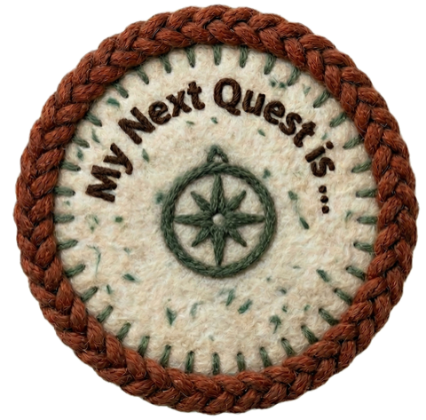
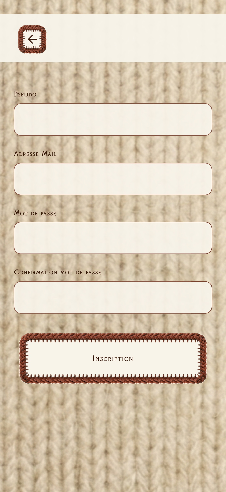
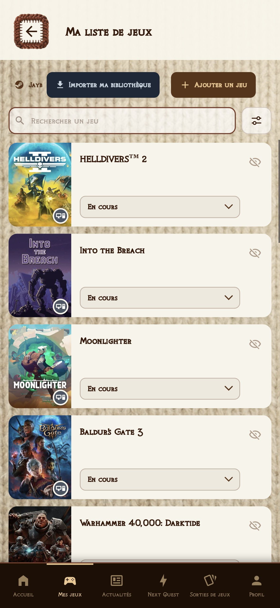
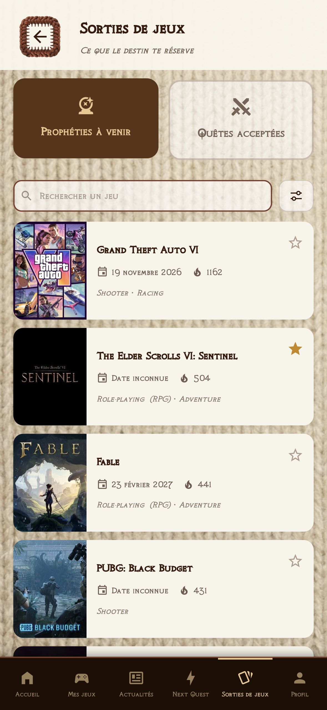
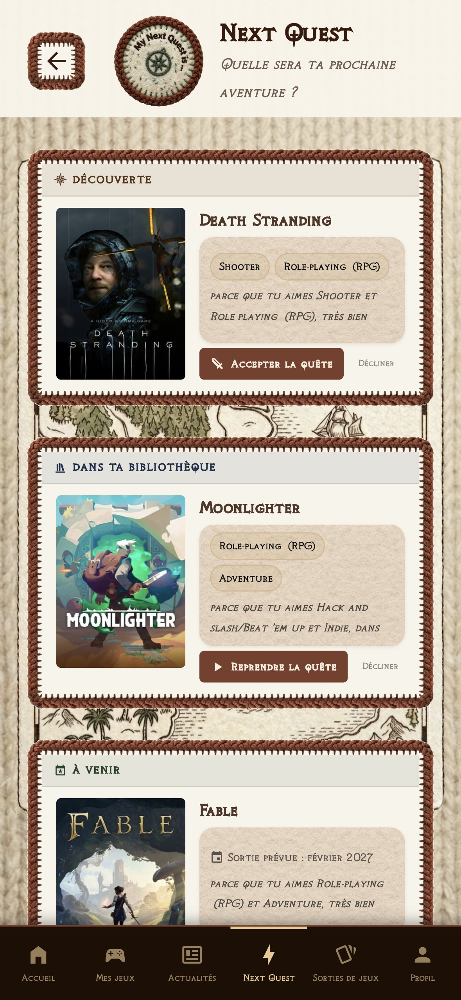
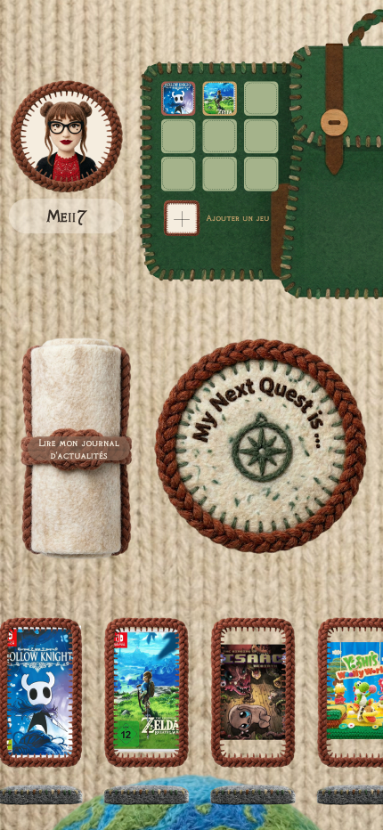
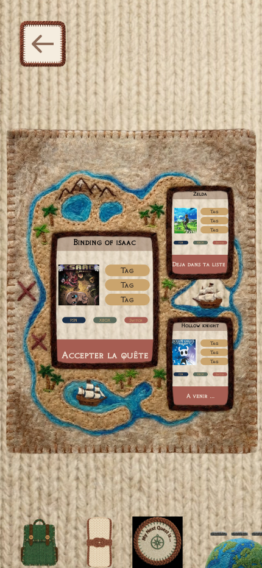

Visiteur
Découvre NextQuest, crée un compte ou se connecte.

Le parcours d'un joueur, de l'inscription à sa prochaine quête
Loreleï et Jean-Baptiste, formation CDA, 20 novembre 2026
« J'ai des jeux partout,
et je ne sais plus où j'en suis. »« Samedi soir, j'ai deux heures.
Je joue à quoi ? »
NextQuest rassemble la ludothèque d'un joueur, suit sa progression et lui propose sa prochaine quête.
Trois rôles dans l'application. Trois joueurs pour incarner le principal.
Découvre NextQuest, crée un compte ou se connecte.
Gère sa ludothèque, suit sa progression, échange avec ses amis.
Entretient le catalogue de jeux et modère la communauté.
Le joueur occasionnel. PS5 et Switch, 5 à 10 heures par semaine.
« Trop de jeux en attente, je ne sais jamais à quoi jouer. »
Il attend des recommandations de jeux courts, adaptées à son temps libre.
Recommandations, timeline, alertes, statut
La passionnée collectionneuse. PC, PS5 et Xbox, plus de 30 heures par semaine.
« Ma bibliothèque est éparpillée sur plus de cinq launchers. »
Elle attend une vue unifiée de tous ses jeux et des statistiques détaillées.
Comptes externes, collection, profil, statut
Le joueur social. PC et Xbox, surtout en multijoueur.
« Difficile de savoir à quoi jouent mes amis. »
Il attend de voir l'activité de ses amis et de partager ses découvertes.
Social, fil d'actualité, profil
Toutes les nôtres suivent le même modèle. Exemple avec STA-01.
En tant que joueur connecté, je veux indiquer qu'un jeu est à faire, en cours, terminé ou abandonné, afin de savoir à tout moment où j'en suis.
Un rôle ou un persona, jamais « le système ».
Ce que la personne veut faire, avec ses mots.
Le bénéfice. Sans lui, la story ne sert à personne.
Ce qu'on vérifie à la main pour dire « c'est fait ».
Deux axes séparés : une story peut être indispensable et pas encore faite.
Un point de couture par story. À droite, les stories faites : faisables de bout en bout sur le web aujourd'hui.
Émilie découvre NextQuest et crée son compte.
En tant que visiteur, je veux créer un compte avec mon adresse email et un mot de passe, afin de retrouver ma ludothèque sur tous mes appareils.

Elle relie son compte Steam : ses jeux arrivent avec leurs heures de jeu.
En tant que joueur qui a des jeux sur Steam, je veux importer toute ma bibliothèque Steam avec mon temps de jeu, afin de voir ma collection réelle dès le premier jour.

Elle dit où elle en est : à faire, en cours, terminé, abandonné.
En tant que joueur connecté, je veux indiquer qu'un jeu est à faire, en cours, terminé ou abandonné, afin de savoir à tout moment où j'en suis.
Elle repère un jeu qui n'est pas encore sorti et décide de le suivre.
En tant que joueur qui attend une sortie, je veux suivre un jeu pas encore sorti, afin de le retrouver dans ma liste de suivi et d'être prévenu à sa sortie.
Aujourd'hui, le suivi reste dans le navigateur : l'écran n'est pas encore relié au serveur.

Elle demande à NextQuest quoi lancer ce soir.
En tant que joueur qui ne sait pas quoi lancer ce soir, je veux recevoir des jeux recommandés d'après ma collection et mes heures de jeu, afin de choisir en quelques secondes.

32 stories restent à faire. Les voici par grands blocs, avec les maquettes qui existent déjà.


Tout le parcours web, sur téléphone, avec les notifications push. Les écrans sont maquettés, le développement n'a pas commencé.
PlayStation, Xbox, Nintendo et Epic Games, puis la mise à jour automatique des bibliothèques. 5 stories.
Être prévenu d'une sortie ou d'une mise à jour, et régler ses préférences. 4 stories, pas encore maquettées.
Amis, messages, partage, activité des amis et actualités des jeux. 9 stories classées en bonus, pas encore maquettées.
La priorité dit ce qui compte, l'état dit où on en est. On croise les deux.
| Priorité | Fait | En cours | À faire | Total |
|---|---|---|---|---|
| Indispensable | 13 | 1 | 2 | 16 |
| Important | 4 | 6 | 19 | 29 |
| Bonus | 0 | 0 | 10 | 10 |
| Plus tard | 0 | 0 | 1 | 1 |
Valider son adresse email, réinitialiser un mot de passe oublié, supprimer son compte et toutes ses données.
Relier le suivi des jeux au compte, les filtres de la timeline, l'avatar, le choix de la langue.
Le plus gros bloc des stories importantes.
Le backlog vit sur notre tableau Trello : une carte par story, ses critères en liste à cocher.
Compte, comptes externes, collection, statut, timeline.
Alertes, recommandations, social, profil, fil d'actualité, administration.